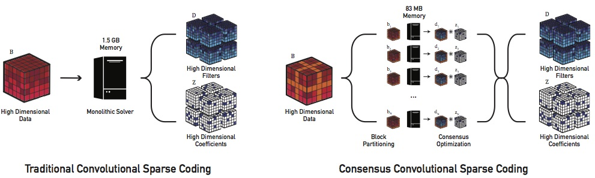

Consensus Convolutional Sparse Coding
Biswarup Choudhury*, Robin Swanson*, Felix Heide*, Gordon Wetzstein, Wolfgang Heidrich
* Denotes Equal Contribution
Accepted to ICCV, 2017

Illustration of traditional CSC (left) and the proposed CCSC (right). CCSC lifts the prohibitive memory limitations
of existing algorithms by breaking large, high dimensional datasets into tractable subproblems which can be efficiently solved
with low memory footprint.(Computer Tower icon by Melvin is licensed under CC-BY 3.0.)
Abstract
Convolutional sparse coding (CSC) is a promising direction
for unsupervised learning in computer vision. In contrast
to recent supervised methods, CSC allows for convolutional
image representations to be learned that are equally
useful for high-level vision tasks and low-level image reconstruction
and can be applied to a wide range of tasks without
problem-specific retraining. Due to their extreme memory
requirements, however, existing CSC solvers have so far
been limited to low-dimensional problems and datasets using
a handful of low-resolution example images at a time.
In this paper, we propose a new approach to solving CSC
as a consensus optimization problem, which lifts these limitations.
By learning CSC features from large-scale image
datasets for the first time, we achieve significant quality
improvements in a number of imaging tasks. Moreover,
the proposed method enables new applications in highdimensional
feature learning that has been intractable using
existing CSC methods. This is demonstrated for a variety
of reconstruction problems across diverse problem
domains, including 3D multispectral demosaicing and 4D
light field view synthesis.
Resources
Paper: [Bis_CCSC_ICCV17.pdf (~4.1MB)]
All images are © IEEE Xplore, reproduced here by permission of IEEE Xplore for your personal use. Not for redistribution.